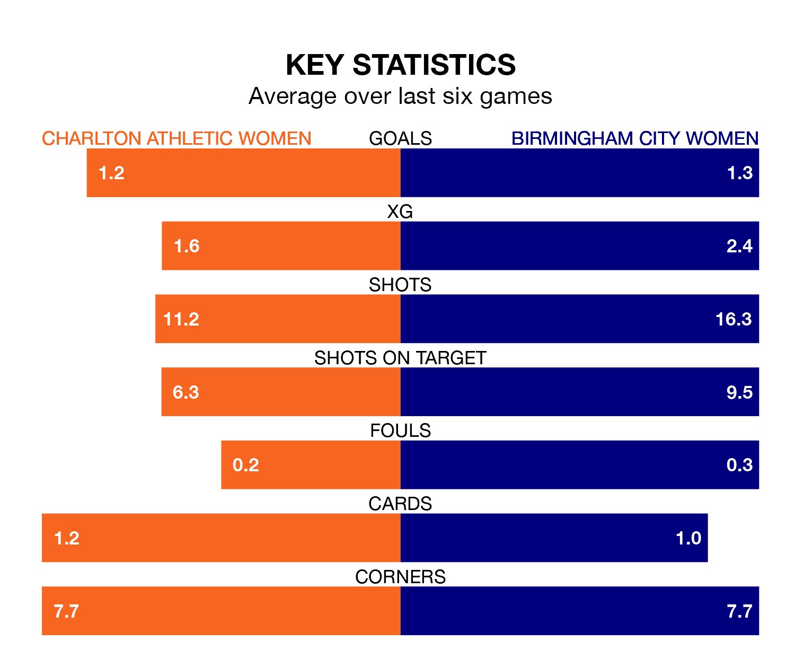

The FA Women's Championship's two meanest defences go head-to-head at the Oakwood on Sunday, when Birmingham City Women visit Charlton Athletic Women.
No teams have conceded fewer goals than Birmingham City to date: the away side have let in just 14 goals in 18 games.
Charlton Athletic have conceded 16 goals in 18 games, giving them the second tightest back line so far this season.
Key to the Blues' home form has been Lucy Thomas, who has allowed 0.67 goals past him per 90 minutes, compared to 0.64 for Sian Rogers in the opposite net.
Birmingham City are third in the table after 18 games, of which they have won 10 and drawn three, earning 33 points.
Charlton Athletic are two places behind the Blues in fifth, with nine wins and six draws putting them on the same number of points.
In the last five years, Charlton Athletic and Birmingham City have played each other on five occasions. Charlton Athletic won three of them, Birmingham City one, and they drew once.
On average, Charlton Athletic scored 1.4 goals and the Blues 0.6 in those matches.
Their last meeting was on November 22, when Charlton Athletic won 1-0 at home.
In Kayleigh Green, the home team have one of the league's most on-form strikers so far this season. She has notched six goals in 17 appearances, to sit seventh in the scoring charts.
The visitors' top scorers, with four goals each, are Charlotte Devlin, Libby Smith and Lily Agg.
Charlton Athletic are in mixed form in the FA Women's Championship, with three wins and a draw from their last six games.
And also with three wins and a draw over that period, Birmingham City's form is identical – they have both taken 10 points from 18.
Charlton Athletic's last match was on Sunday, a 2-1 loss against London City Lionesses, with Melisa Filis getting the goal for Charlton Athletic.
Birmingham City beat Lewes Women 2-0 last time out, also on Sunday, with Claudia Walker and Devlin on the scoresheet.
Updated: 10:31 (UTC), 31/03/24